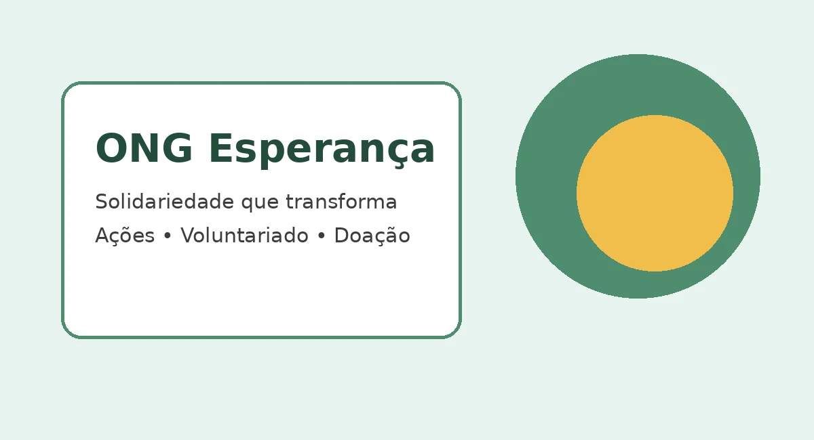

Quem Somos

A ONG Esperança é uma organização sem fins lucrativos dedicada a promover ações sociais e contribuir para uma sociedade mais justa e solidária.
Nossa Missão
Apoiar pessoas em situação de vulnerabilidade, promovendo inclusão, cidadania e oportunidades por meio de ações comunitárias.
Contato
E-mail: contato@ongesperanca.org
Telefone: (71) 3333-3333
Endereço: Rua da Solidariedade, 100 - Salvador, BA